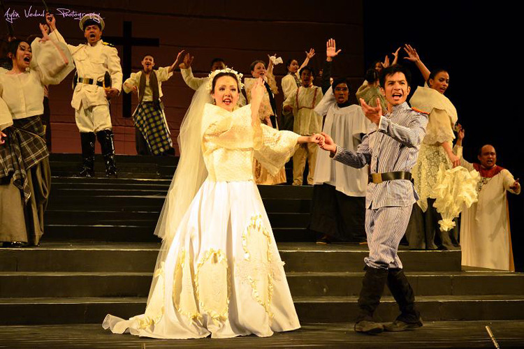

Indigenous Theatre
Indigenous theatre, integral to many cultures worldwide, encompasses rituals, dances, and traditions vital for preserving identity and fostering community cohesion. As it evolves, it offers opportunities for cultural exchange, education, and activism, serving as a powerful tool for both heritage conservation and addressing contemporary challenges.
The Spanish Colonial Theatre
The Spanish Colonial Period, spanning 333 years, profoundly influenced Philippine culture. Catholicism and Spanish customs fused with indigenous traditions, giving rise to the unique "Lowland Folk Culture" shared by various ethnolinguistic groups. This historical era's legacy still shapes Philippine identity, showcasing the complex interplay between colonial influences and indigenous heritage.
The American Colonial
During the American colonial era, despite its brevity, it left a significant impact, initially in form and later in philosophy, on Philippine theater. Their influence is most notably observed in bodabil and the staging or translation of plays and dramas into English. The first bodabil was introduced in 1898 by the Manila Dramatic Guild, primarily to entertain American soldiers and residents in Manila.
The Contemporary Period
The contemporary period of Philippine theater is marked by innovation and significant contributions from various directors. Plays from literary contests, workshops, and theater groups highlight its dynamic and diverse nature. Esteemed directors from Manila and beyond have been crucial in developing the theatrical scene, ensuring its continuous growth and evolution.
Philippine Theater
Philippine theater presents the tradition and historical evolution of theatrical arts in the country. This includes a variety of performance forms such as indigenous theatre, Spanish influenced zarzuelas, American-style musicals and contemporary filipino plays. This theatrical tradition plays an important role in preserving and promoting Filipino culture and heritage, this showcases the artistic talent of the Filipino people. Moreover, it aims to entertain and educate audiences by creatively telling stories to captivate the audience and convey messages.